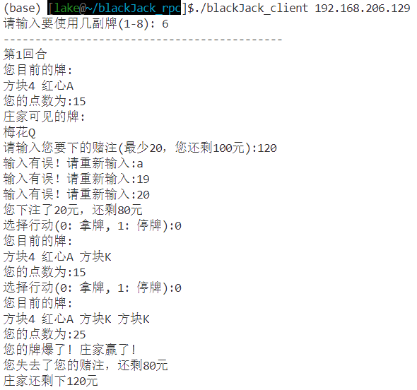
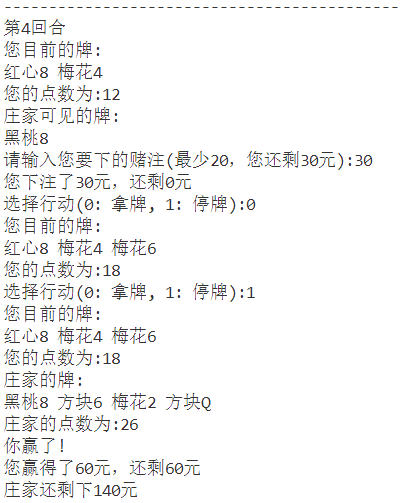
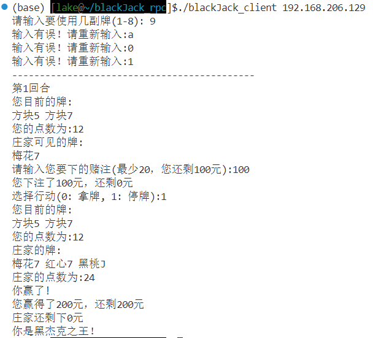

简介
远程过程调用 (RPC) 是一种允许程序在不同计算机之间进行通信的协议。它使得客户端可以像调用本地函数一样调用远程服务器上的函数，而无需了解底层的网络细节。这一次的作业是实现RPC机制下的“黑杰克”游戏
分析与设计
首先在 ubuntu 下下载并使用 rpcgen 编写 .x 文件，使用 rpcgen blackjack.x 生成文件并完善逻辑。
基本规则如下：
卡片值
-
数字牌(2-10)：牌的价值等于其面值。
-
人头牌(J、Q、K):每张价值10分。
-
A:可以值1分或11分，具体取决于哪个对玩家的手牌更有利。
所以我用两个数组分别记录四个花色和13种牌面，外循环来选择牌面，内循环选择花色，来给 52 张牌初始化，并且外循环的牌面从 2 开始，也就是 2 - 10，J ，Q ，K ，A ，这样 2 - 10 的部分用外循环的值加2即可，然后针对 i + 2 等于 11，12，13 的赋值为 10，等于 14 则赋值为 11 。并且根据有多少副牌就重复多少次这个过程。在计分时，每遇到一个手牌分值为11的就用一个变量记录一次，这样当手牌分值超过 21 且记录值大于 0 的时候，总分减去 10，这样就达成了 A 值 1 分或 11 分取决于哪个对玩家更有利的规则。
游戏流程
游戏用一个结构体game state来表示这场游戏的状态：
struct game_state {
int num_decks;
int action; /* 玩家操作：0: 拿牌, 1: 停牌 */
struct hand player_hand; /* 玩家手牌 */
struct hand dealer_hand; /* 庄家手牌 */
int player_busted; /* 玩家是否爆牌 (0: 未爆牌, 1: 已爆牌) */
int dealer_busted; /* 庄家是否爆牌 (0: 未爆牌, 1: 已爆牌) */
int result; /* 游戏结果 (0: 游戏进行中, 1: 玩家赢, 2: 庄家赢, 3: 平局) */
};这个结构体用来表示一张牌，主要有三个部分
struct card {
int value; /* 牌的点数，2-11 (2-10是普通牌，11是Ace) */
char suit[10]; /* 牌的花色，如红心, 方块, 梅花, 黑桃*/
char name[2]; /* 牌名 */
};这个结构体表示手牌，包括牌和牌的数量两个信息
struct card {
int value; /* 牌的点数，2-11 (2-10是普通牌，11是Ace) */
char suit[10]; /* 牌的花色，如红心, 方块, 梅花, 黑桃*/
char name[2]; /* 牌名 */
};
struct hand {
struct card cards[21]; /* 6副牌及以上时最多可以21张牌 */
int count; /* 当前手中的牌数 */
};发牌
玩家和庄家各发两张牌。玩家的牌通常面朝上，而庄家有一张面朝上的牌（“明牌”)和一张面下的牌(“底牌”)。
这个过程由server端的函数game_state *deal_cards_1_svc(game_state *current_state, struct svc_req *rqstp)实现，客户端在游戏开始时调用，传递的参数为game state *p，这个过程不仅包括了一开始的发牌，还包括初始化牌堆。通过利用随机种子交换初始化的牌堆，达到牌堆内的牌无序的状态，然后按顺序发牌即可。并初始化game state的爆牌状态和结果状态返回给client端。
玩家决定“拿牌”（抓另一张牌）或“停牌”（保留当前手牌)
玩家可以继续补牌，直到他选择停牌或他的手牌超过21（称为“爆牌”）。庄家亮出底牌。然后庄家必须补牌，直到他的手牌总点数为17或更高。
当state的result为0的时候进入while循环，同时这个过程由server端的函数game_state *player_action_1_svc(game_state *state, struct svc_req *rqstp)实现，根据每次传过来的游戏状态中的action值来判断此次操作是拿牌还是停牌，如果拿牌则将手牌加1，并计算分数是否超过21，未超过直接返回状态，result的值依旧为0，若超过则设置玩家爆牌，返回状态。如果此次是停牌，则进入庄家的行动，庄家必须补牌，直到他的手牌总点数为17或更高。
赢得比赛
如果玩家的总点数超过21，他就爆牌并输掉。如果庄家爆牌，则玩家获胜。如果两者都没有爆牌，则靠近21的牌获胜。如果玩家和庄家的总点数相同，则为平局。
根据state的结果值和是否爆牌进行判断，在玩家选择停牌的操作逻辑中计算庄家和玩家的分数，并更新游戏结果 (0: 游戏进行中, 1: 玩家赢, 2: 庄家赢, 3: 平局)。
额外规则设计
加入了选择赌注，并给与玩家和庄家各自的初始金额来进行游戏，这样在某一方金额耗光之前，都会继续进行游戏，同时固定赔率为1赔2，在发牌完会询问下注情况。这个部分的逻辑在客户端维护几个变量即可。另外，在实现过程中发现rpc的通信好像存在使用旧值的情况，所以在客户端维护一个状态值来记录一些必要数据，而每次传入参数给server端的时候，深克隆一个新的state来避免这个问题。因为会从缓冲区读取数据也考虑了代码健壮性的问题，针对错误的读取有相应的处理。
编写完成后使用如下指令生成可执行文件：
gcc -o blackJack_server blackJack_svc.c blackJack_xdr.c -I/usr/include/tirpc -ltirpc -lnsl
gcc -o blackJack_client blackJack_clnt.c blackJack_xdr.c -I/usr/include/tirpc -ltirpc -lnsl
实现演示
这里的每一张图都是一回合的基本过程，会包括发牌、下注、选择行动、分数结算、赌注结算的结果，我会在每一张图片的下面标注它额外的地方。
这里显示了A的分数结算的实现以及赌注输入有误和玩家牌爆了的处理。

这里显示了行动指令的输入有误的处理和玩家分数小于庄家的情况。
这里显示了玩家分数大于庄家的情况。 这里是输掉全部的情况。
这里展示了使用几副牌输入有误和庄家爆牌以及玩家最终赢得胜利的情况。
总结
在这次关于RPC机制下“黑杰克”游戏的实现过程中，我深入探索了远程过程调用的基本原理及其在分布式系统中的重要性。通过设计和实现游戏的关键逻辑，我不仅加深了对卡牌游戏规则的理解，还提升了编程能力，尤其是在处理客户端与服务器通信方面。遇到的挑战，例如旧值问题，促使我更深入的体会rpc的内在原理。同时让我在设计中更加注重代码的健壮性。这次经历让我意识到，合理的结构设计和细致的逻辑处理是十分重要的。未来，我期待将这些经验应用于更复杂的项目中，继续探索RPC及其他网络编程技术的应用潜力。